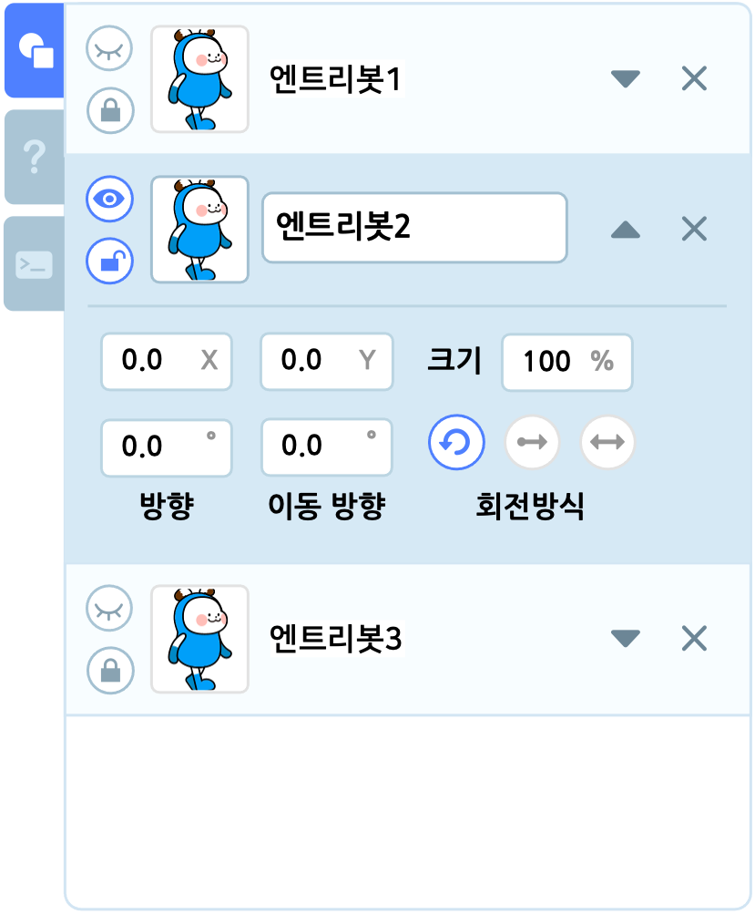

보조 창
오브젝트 목록 탭
선택한 장면에서 오브젝트를 추가하거나 관리하는 영역입니다. 실행 화면 아래에 있습니다.
오브젝트 목록
- 오브젝트를 클릭하면 선택할 수 있습니다. 오브젝트를 선택하면 내용을 수정할 수 있는 부분이 표시됩니다. 선택하지 않은 오브젝트는 순서만 변경할 수 있어요.
- 선택한 오브젝트의 이름 상자, X/Y 좌표 상자, 크기 상자를 클릭해서 숫자를 입력할 수 있습니다.
방향 상자와 이동 방향 상자를 클릭하면 각도를 입력할 수 있습니다. - 이름 상자 오른쪽의 삼각형 버튼을 클릭하면 오브젝트의 내용을 숨깁니다.
- 삼각형 버튼 오른쪽의 X 버튼을 클릭하면 오브젝트를 삭제합니다.
- 가장 왼쪽의 눈 아이콘을 클릭해서 오브젝트를 실행 화면에서 나타내거나 숨깁니다.
- 가장 왼쪽의 자물쇠 아이콘을 클릭해서 오브젝트를 잠급니다. 잠긴 오브젝트는 삭제하거나 속성을 수정할 수 없게 됩니다. (배경 오브젝트는 추가할 때 기본으로 잠겨 있습니다.)
- 왼쪽의 썸네일을 드래그해서 오브젝트의 순서를 바꿉니다.
오브젝트 내용

역삼각형 버튼을 클릭하면 나타나는 오브젝트의 내용입니다.
X (좌표) : 오브젝트 중심점의 가로(축) 위치입니다. 가운데는 0 이고, 오른쪽으로 갈수록 양수(+)로 커지고, 왼쪽으로 갈수록 음수(-)로 커져요.
Y (좌표) : 오브젝트 중심점의 세로(축) 위치입니다. 가운데는 0 이고, 위로 갈수록 양수(+)로 커지고, 아래로 갈수록 음수(-)로 커져요.
크기 : 오브젝트의 크기입니다. 일반 오브젝트의 기본 크기는 100 이고, 배경 오브젝트의 기본 크기는 375이며 1 보다 작아질 수 없어요.
방향(º) : 오브젝트가 기울어진 정도를 의미합니다. 0º~360º 범위에서 조절할 수 있어요. 이동 방향은 방향을 기준으로 하기에 방향이 바뀌면 이동 방향이 바뀌는 것 처럼 느껴질 수 있지만, 실제로 이동방향은 변하지 않습니다.

이동 방향(º) : 오브젝트의 방향에 대해 상대적인 진행 방향을 의미합니다. 0º~360º 범위에서 조절할 수 있어요.

오브젝트 회전 방식
오브젝트의 회전 방식은 세 가지입니다.
모든 방향
 : 오브젝트의 방향(기울기)을 자유롭게 변경할 수 있습니다.
: 오브젝트의 방향(기울기)을 자유롭게 변경할 수 있습니다.
좌우 방향
 : 오브젝트가 이동방향에 맞춰 좌우로 바뀝니다.
: 오브젝트가 이동방향에 맞춰 좌우로 바뀝니다. - 이동방향이 0º 보다 크거나 같고 180º 보다 작다면 오브젝트의 좌우가 바뀌지 않습니다.
- 이동방향이 180º 보다 크거나 같고 360º(0º) 보다 작은 범위에서, 오브젝트는 좌우가 바뀌어 동작합니다.

회전 없음
 : 오브젝트가 이동 방향과 상관 없이 원래의 방향(기울기)를 유지합니다. 회전 방식이 회전 없음일 때에는 방향(기울기)을 바꾸는 움직임 블록을 사용해도 방향(기울기)에 영향을 주지 않습니다.
: 오브젝트가 이동 방향과 상관 없이 원래의 방향(기울기)를 유지합니다. 회전 방식이 회전 없음일 때에는 방향(기울기)을 바꾸는 움직임 블록을 사용해도 방향(기울기)에 영향을 주지 않습니다.
오브젝트 내보내기
오브젝트를 마우스 오른쪽 클릭하면 복제, 삭제, 복사하기, 붙여넣기, 나의 보관함에 추가하기, 오브젝트 내보내기 등을 선택할 수 있습니다.
‘오브젝트 내보내기’를 클릭하면 해당 오브젝트를 eo 형식(확장자)의 파일로 저장합니다.
이 파일은 ‘오브젝트 추가하기’ 팝업 창의 ‘파일 올리기’ 탭에서 다시 올릴 수 있어요.
도움말 탭

도움말 탭은 블록 꾸러미나 블록 조립소에 있는 블록을 선택하면 해당 블록의 설명이 나타나는 영역입니다.
작품 만들기 화면의 위(헤더)에 있는 도움말 목록을 클릭해서 이 탭을 열 수도 있어요.

블록을 어떻게 사용해야 할지 감이 잘 안 온다면, 그냥 다 클릭해봐요!
엔트리 콘솔 탭
엔트리파이선 모드에서 명령어를 입력하는 데 사용하는 영역입니다.
블록 코딩 모드에서는 대답 창 대신 대답을 입력하는데 사용할 수도 있어요.
하드웨어 상세 탭

엔트리에 연결한 하드웨어의 상세 정보를 확인하는 영역입니다.
작품을 실행하지 않아도 하드웨어의 입력/출력 값을 실시간으로 확인할 수 있어요.
- 연결한 하드웨어의 이미지가 나타납니다.
- 청록색으로 표시하는 숫자는 입력 값입니다.
- 보라색으로 표시하는 숫자는 출력 값입니다.